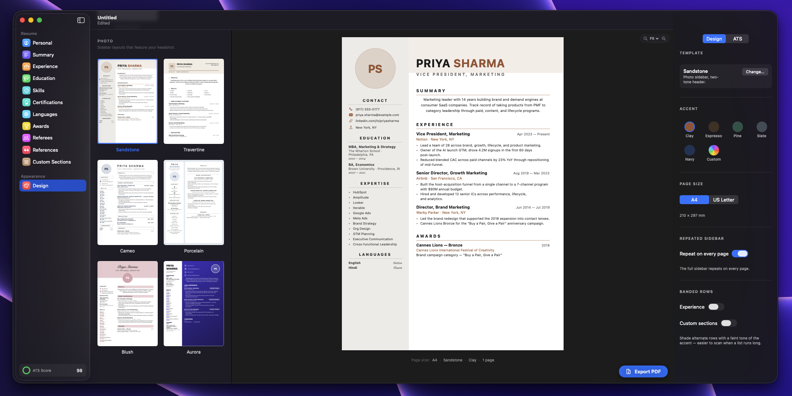
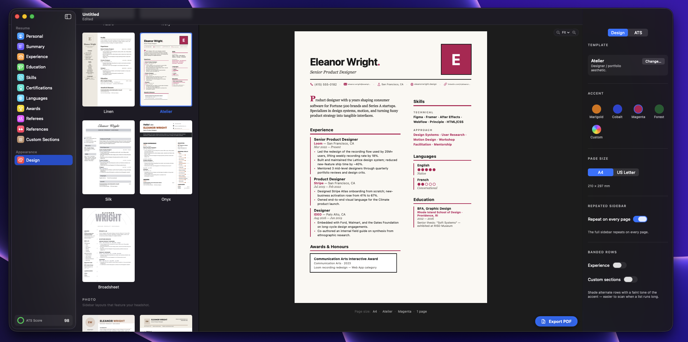
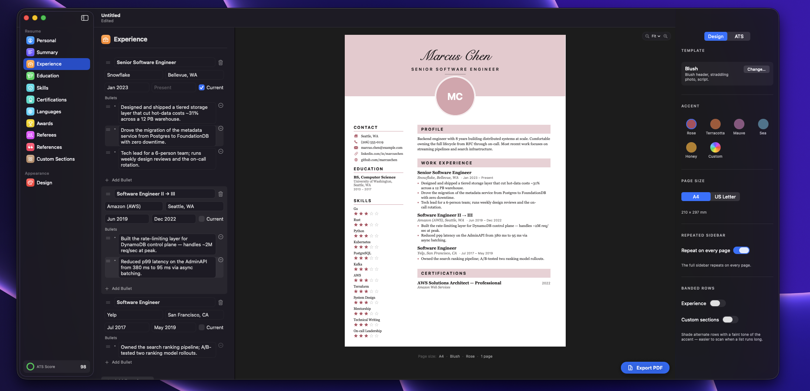
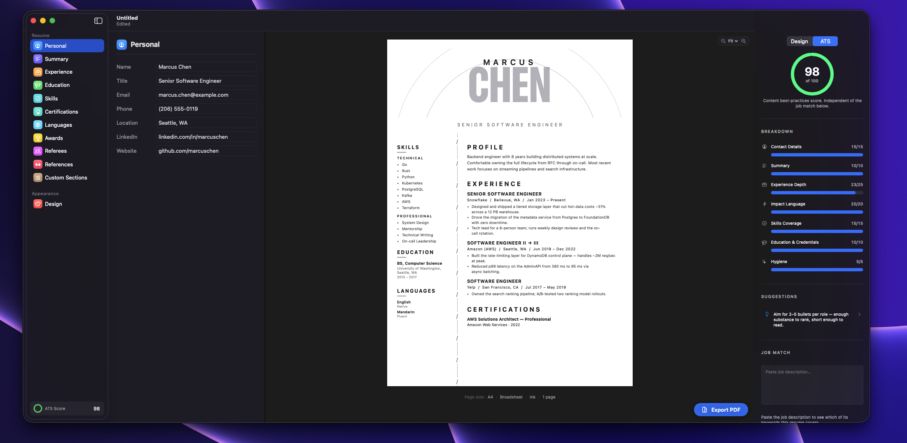

Seventeen designer templates, live ATS scoring, and crisp PDF export, in a fast native app that keeps everything on your machine.
Download on the Mac App Store One purchase. Every template included. No subscription.
Each template ships with its own named accent palette, from Clay to Navy, plus a full custom colour wheel. Pick one and the whole design follows: headings, rules, dividers, details.
“Design is the silent ambassador of your resume.”
This page is wearing Clay. Try another, just like the app.
From restrained single-column classics to editorial layouts with sidebars, mastheads, and photo headers. Browse them side by side and switch any resume between them with one click. Every template handles multiple pages, real content, and print without falling apart.

Every section is a proper editor. Reorder roles and bullets by dragging, mark a position as current, rate skills with dots, stars, or tracks, and watch the page update live as you type.

Most applications are screened by tracking software before a person reads them. Resume Lab scores your resume as you write, breaks the score down by section, and tells you exactly what to fix. Paste a job description and see which of its keywords your resume covers.

Resume Lab has no accounts, no analytics, and no network features at all. Your documents are ordinary files saved where you choose, and your exports are clean, sharp PDFs. Nothing you type is ever uploaded.
Resume Lab is on the Mac App Store. One price, every template, no subscription.
Download on the Mac App Store